在JSP开发中，为了获取Servlet域对象中存储的数据，经常需要书写很多Java代码，这样的做法会使得JSP页面混乱，难以维护。为此在JSP中提供了EL表达式。EL表达式是Expressionb Language的缩写，它是一种简单的数据访问语言。
在JSP开发中，为了获取Servlet域对象中存储的数据，经常需要书写很多Java代码，这样的做法会使得JSP页面混乱，难以维护。为此在JSP中提供了EL表达式。EL表达式是Expressionb Language的缩写，它是一种简单的数据访问语言。
在JSP开发中，为了获取Servlet域对象中存储的数据，经常需要书写很多Java代码，这样的做法会使得JSP页面混乱，难以维护。为此在JSP中提供了EL表达式。EL表达式是Expressionb Language的缩写，它是一种简单的数据访问语言。
EL表达式总是放在大括号里，而且前面有一个美元符前缀。
${firstThing.secondThing}
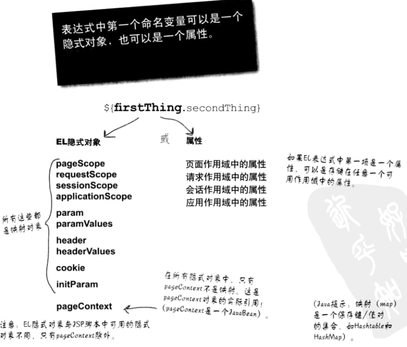
EL表达式中的变量就是一个基本存储单元，EL表达式可以将变量映射到一个对象上，具体示例如下:
${product}
在上述示例中，product就是一个变量。EL表达式中的变量不用事先定义就可以直接使用
1、点运算符(.)
EL表达式中的点运算符，用于访问JSP页面中某些对象的属性，如JavaBean对象、List对象、Array对象等，其语法格式如下：
${customer.name}
在上面的语法格式中，表达式${customer.name}中的点运算符的作用就是访问customer对象中的name属性
2、方括号运算符([])
EL表达式中的方括号运算符与点运算符的功能相同，都用于访问JSP页面中某些对象的属性，当获取的属性名中包含一些特殊符号，如“-”或“？”等并非字母或数字的符号，就只能使用方括号运算符来访问该属性:
${user["My-Name"]}
与点运算符的区别：
3、算数运算符
${1-2 }<br>
${1*2 }<br>
${122+22 }<br>
${10/4 }<br>
4、比较运算符
> < == != <= >=
5、逻辑运算符
&&(and) ||（or)
6、empty运算符
EL表达式中的empty运算符用于判断某个对象是否为null或“”，结果为布尔类型
${empty var}
隐含对象名称|描述 -|-| pageContext|对应于JSP页面中的pageContext对象 pageScope|代表page域中用于保存属性的Map对象 requestrScope|代表equest域中用于保存属性的Map对象 sesssionScope|代表session域中用于保存属性的Map对象 applicationScope|代表application域中用于保存属性的Map对象 param|表示了一个保存所有请求参数的Map对象 paramValues|表示一个保存了所有请求参数的Map对象，它对于某个请求参数，返回的是一个String类型的数组 header|表示保存了所有http请求头字段的Map对象 headerValues|表示了一个保存了所有http请求头字段的Map对象，返回String类型的数组 cookie|用来取得使用者的Cookie值，cookie的类型时Map initParam|表示了一个保存所有Web应用初始化参数的Map对象
为了获取JSP页面的隐士对象（注意区分JSP页面的隐式对象与EL表达式的隐式对象），可以使用EL表达式中的pageContext隐式对象。
可以利用EL表达式中的pageContext对象获取JSP中的隐式对象。
<!-- 使用pageContext对象获取request对象 -->
${pageContext.request.characterEncoding }<br>
<!-- 使用pageContext对象获取response对象 -->
${pageContext.response.contentType }<br>
<!-- 使用pageContext对象获取ServletContext对象 -->
${pageContext.servletContext.serverInfo }<br>
<!-- 使用pageContext对象获取ServletConfig对象 -->
${pageContext.servletConfig.servletName }<br>
在Web开发中，pageContext、HttpServletRequest、HttpSession和ServletContext这4个对象之所以能存储数据，是因为他们内部都定义了一个Map集合，这些Map集合是有一定作用范围的，例如HttpRequest对象存储的数据只能在当前请求中可以获取到。习惯性的，我们把这些Map集合称为域，这些Map集合所在的对象称为域对象。在EL表达式中，为了获取指定域的数据，提供了pageScope、requestScope、SessionScope和applicationScope
这些所谓scope就是Map对象
需要注意的是，EL表达式只能在这4个作用域中获取数据
<% request.setAttribute("userName", "1"); %>
<%session.setAttribute("userName", "2"); %>
<%pageContext.setAttribute("userName", "3"); %>
<% application.setAttribute("userName", "4"); %>
表达式\${pageScope.userName }的值为 ${pageScope.userName }<br>
表达式\${requestScope.userName }的值为 ${requestScope.userName }<br>
表达式\${sessionScope.userName }的值为 ${sessionScope.userName }<br>
表达式\${applicationScope.userName }的值为 ${applicationScope.userName }<br>
需要注意的是，使用EL表达式获取某个域对象的属性时，可以不使用这些隐式对象来指定查找域，而是直接饮用域中的属性名称即可，例如表达式${userName}就是在page、request、session、application这四个作用域内依次查找userName属性
测试属性的保存于传递与使用
1、在Servlet中处理请求数据，并对一些数据进行保存，转发，存储在数值域中。方便在EL表达式中使用
package com.monkey.servlet;
import java.io.IOException;
import javax.servlet.ServletException;
import javax.servlet.annotation.WebServlet;
import javax.servlet.http.HttpServlet;
import javax.servlet.http.HttpServletRequest;
import javax.servlet.http.HttpServletResponse;
import com.bean.Dog;
import com.bean.Person;
public class TestServlet extends HttpServlet {
@Override
protected void doGet(HttpServletRequest req, HttpServletResponse resp) throws ServletException, IOException {
//设置request requestScope
req.setAttribute("name", "zhoujian");
//设置session属性 sessionScope
req.getSession().setAttribute("password", "123");
//设置application属性(EL表达式) applicationScope
req.getServletContext().setAttribute("quanwen", "shujuku");
//设置pageScope
req.getRequestDispatcher("/Testel.jsp").forward(req, resp);
}
2、在JSP页面的EL表达式中获取数据并进行页面的展示
获取属性<br>
request中存储的属性：${requestScope.name}<br>
session中存储的属性: ${sessionScope.password }<br>
applicationScope(ServletContex)中存储的属性：${applicationScope.quanwen }<br>
3、页面
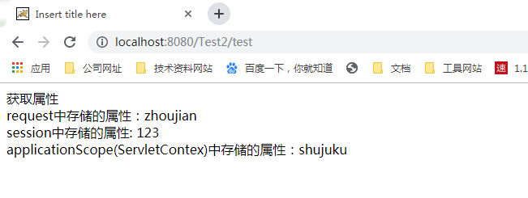

在JSP页面中，经常需要获取客户端传递的请求参数，为此，EL表达式提供了param和paramValues两个隐式对象，这两个隐式对象专门用于获取客户端访问JSP页面时传递的请求参数
1、param对象
param对象用于获取请求参数中的某个值，它是Map类型，与request.getParameter()方法等价，在使用EL获取参数时，如果参数不存在，返回的是空的字符串
${param.num}
2、paramValues对象*
如果一个请求参数有多个值，可以使用paramVales对象来获取请求参数的所有值，该对象用于返回请求参数所有值组成的数组。
${paramValues.num}
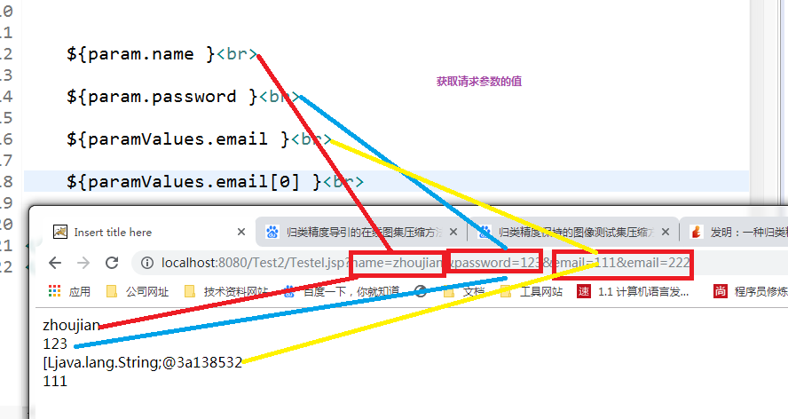
（1）header对象
header对象用于获取请求头字段中某个值
${header["user-agent"]}
在JSP开发中，经常需要获取客户端的Cookie信息，为此，在EL表达式中，提供了Cookie的隐式对象，该对象是一个代表所有Cookie信息的Map集合，Map集合中元素的键为各个Cookie的名称，值则为对应的Cookie对象
获取cookie对象的信息：${cookie.userName}
获取cookie对象的名称：${cookie.userName.name}
获取cookie对象的值:${cookie.userNAME。vaule}
在开发一个Web应用程序时，通常会在web.xml文件中配置一些初始化参数，为了方便获取这些参数，EL表达式提供了initParam隐式对象，该对象可以获取Web应用程序中全局初始化参数，具体示例如下:
${initParam.count}
EL表达式简化了JSP页面的书写，使不懂Java编程的开发人员也可以编写工能够强大的JSP页面。但EL本身的功能毕竟有限，例如，对于循环语句，EL表达式是很难实现的。因此，EL表达式允许用户自定义EL函数。
解决在页面中编写 < >这种HYML代码的问题。
在JSP中可以通过Java代码来获取信息，但是过多的Java代码会使得JSP页面非常复杂。为此，Sun公司制定了一套标准标签库JSTL.
从JSP1.1规范开始，JSP就支持使用自定义标签，使用自定义标签大大降低了JSP页面的复杂度。同时增强了代码的重用性，为此许多Web厂商都定制了自身应用的标签库，然而同一功能的标签由不同的Web应用厂商指定可能是不同的，这就导致市面上出现了很多功能相同的标签。为了解决这个问题，Sun公司制订了一套标准标签库（Java Server Pages Standard Tag Library)，简称JSTL.
在JSTL1.1规范中，有5个标准的标签库。
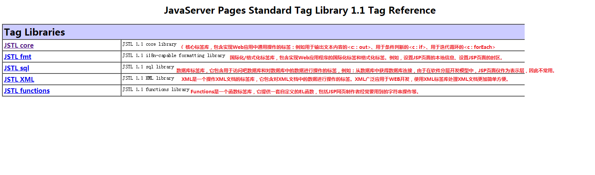
首先需要导入相关的jar包
s
在Eclipse中导入相关jar包之后的目录如下：
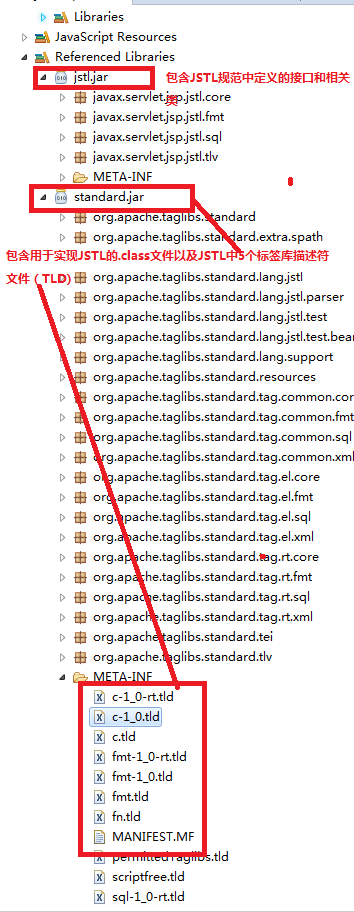
使用
<%@ page language="java" contentType="text/html; charset=ISO-8859-1"
pageEncoding="ISO-8859-1"%>
//使用taglib指令导入core标签库，uri属性用于指定引入标签库描述符文件的URI,prefix属性用于指定引入标签库描述文件的前缀
<%@ taglib prefix="c" uri="http://java.sun.com/jsp/jstl/core" %>
<!DOCTYPE html PUBLIC "-//W3C//DTD HTML 4.01 Transitional//EN" "http://www.w3.org/TR/html4/loose.dtd">
<html>
<head>
<meta http-equiv="Content-Type" content="text/html; charset=ISO-8859-1">
<title>Insert title here</title>
</head>
<body>
<c:out value="HellowoRS"></c:out>
</body>
</html>
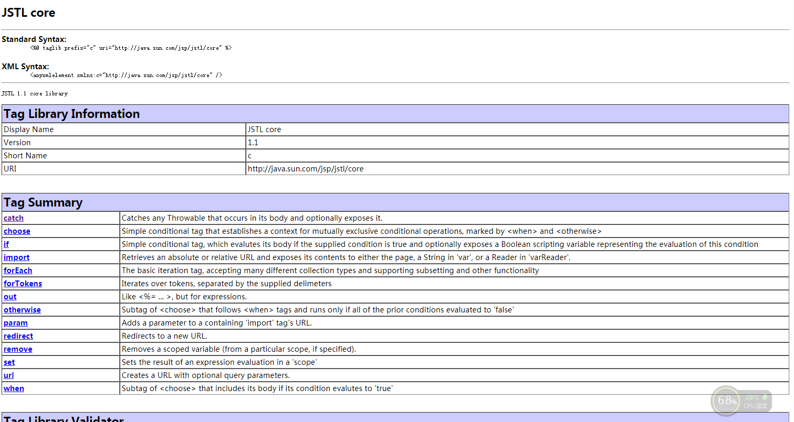
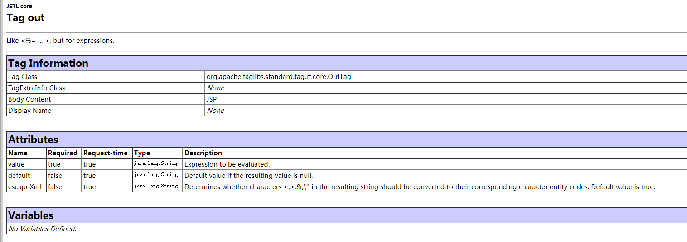
语法1：
<c:out value="value" [default=""] [escapeXml="{true|false}"/>
语法2：
<c:out value="value" [escapeXml="{true|false}"] defaultValue </c:out>
escapeXml:用于指定是否将> ,<,&,"、“,等特殊字符进行HTML编码转换后再进行输出，默认值是true.
<!-- 注意EL表达式结合JSTL标签shiyon -->
<c:out value="${param.username}" default="unkown"></c:out><br>
<c:out value="${param.username}" >unkown</c:out><br>
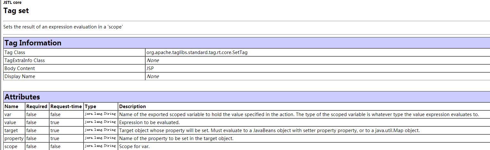
value:设置属性的值
var:指定要设置域对象属性的名称
scope:属性所在域对象
target:用于指定要设置属性的对象，这个对象必须是JavaBean对象或者Map对象
(1)使用<c:set>标签设置域对象中某个属性的值
<!--获取请求request中的参数并进行设置 -->
<c:set var="userName" scope="request" value="${param.userName} "></c:set>
<!-- 输出设置参数 注意EL表达式通常放在value属性中 -->
<c:out value="${userName}"/>
(1)使用<c:set>标签设置UserBean对象和Map对象中某个属性的值
<!-- 使用<c:set>标签设置JavaBean 对象和Map对象 -->
<!-- 首先生成或获取一个Java对象 -->
<jsp:useBean id="user" class="com.monkey.bean.User" scope="page"></jsp:useBean>
<!-- 使用<c:set>标签设置属性 -->
<c:set target="${user}" property="userName" value="zhoujian"/>
<c:set target="${user}" property="passWord" value="123"/>
<c:out value="${user.userName} "></c:out>
<c:out value="${user.passWord }"></c:out>
<!-- 定义一个Map集合，并将其绑定给request对象 -->
<% HashMap<String,String> map = new HashMap<>();
request.setAttribute("preference", map);
%>
<!-- 通过target属性将Map集合指定为要设置属性的对象 -->
<c:set target="${preference}" property="color" value="green" ></c:set>
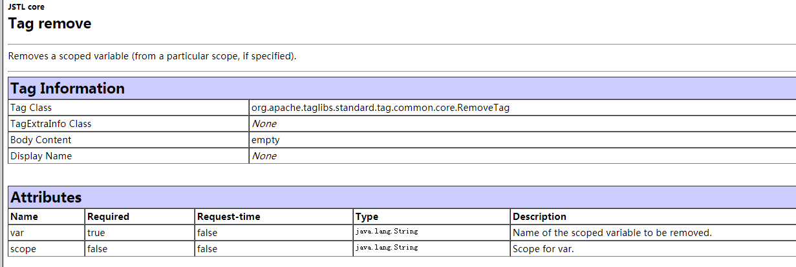
scope:用于指定要删除属性所属的域对象
<!-- 设置属性，注意域 -->
<c:set scope="request" var="company" value="传播止咳"/>
<c:set scope="request" var="url" value="www.baidu.com"/>
设置的属性为:<br>
<c:out value="${requestScope.company} "></c:out><br>
<c:out value="${url} "></c:out><br>
移除属性之后:
<c:remove var="company"/>
<c:remove var="url"/>
<c:out value="${requestScope.company} "></c:out><br>
<c:out value="${url} "></c:out>
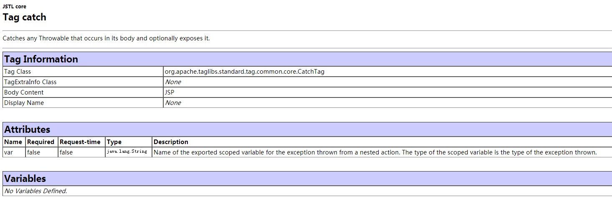
在操作JSP页面时，偶尔也会出现一些异常，为了捕获这些异常，Core标签库中提供了一个<c:catch>标签，该标签用于捕获这些异常，Core标签库中提供了一个<c:catch>标签，该标签用于捕获嵌套在<c:catch>标签体中出现的异常
var:用于表示<c:catch>标签捕获的异常对象，其值是一个静态的字符串
<!-- 尝试捕获异常 -->
<c:catch var="exception">
<%
int i =0 ;
int j =10;
System.out.println(j/i);
%>
</c:catch>
<!-- 输出异常信息 -->
异常：<c:out value="${exception} "></c:out><br>
异常:<c:out value="${exception.message }"/><br>
异常:<c:out value="${exception.cause }"/>
在程序开发中，经常需要使用if语句进行条件判断，如果要在JSP页面中进行条件判断，就需要进行条件判断，就需要使用Core标签库中提供的<c:if>标签，该标签专门用于完成JSP页面中的条件判断。
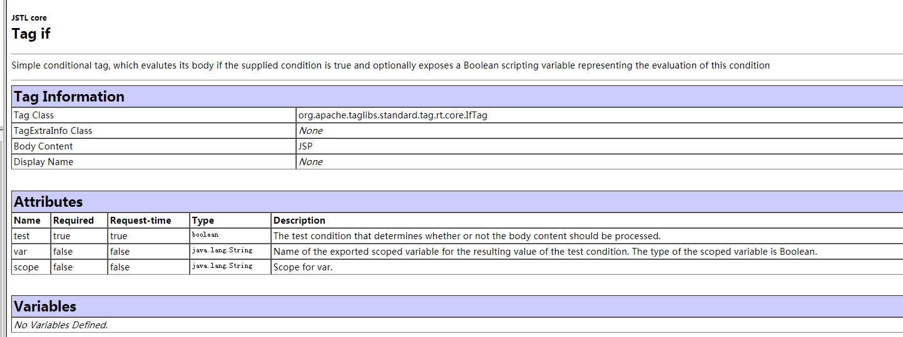
scope:用于指定var变量的作用范围，默认值为page。如果属性test的计算结果为true，那么标签体将被执行，否则标签体不执行
<!--用于设置属性 -->
<c:set scope="request" var="count" value="1"></c:set>
<c:out value="${requestScope.count }"></c:out>
<!-- 使用 <c:if> 标签进行判断 -->
<c:if test="${count>0 }" var="count" scope="request">
<% out.print(12324214); %>
</c:if>
在程序开发中不仅需要使用if条件语句，还经常会使用if-else语句，为了在JSP页面中可以完成同样的功能，Core标签库提供<c:choose>标签，该标签用于指定多个条件选择的组合边界，它必须与<c:when>、<c:otherwise>标签一起使用.
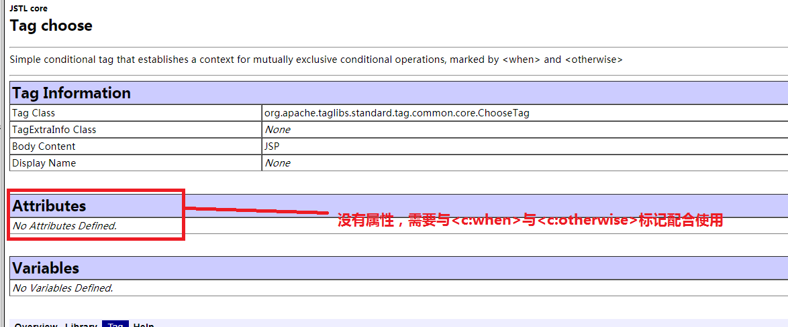
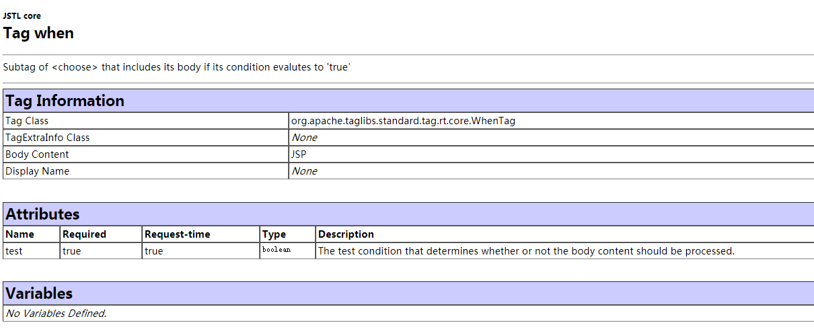
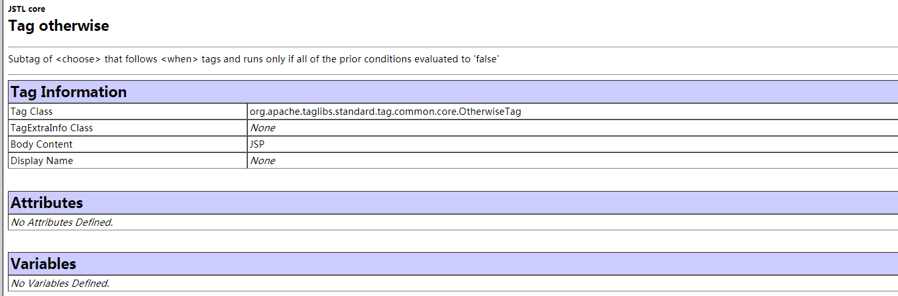
<c:otherwise>标签没有属性，它必须作为<c:choose>标签的最后分支出现，当所有的<c:when>标签的test条件都不成立时，才执行和输出<c:otherwise>标签体中的内容。
<c:choose>
<c:when test="${param.user=='zhoujian'} ">
${param.user} is a manager
</c:when>
<c:when test="${param.user=='cege'}">
${param.user } is a employee
</c:when>
<c:otherwise>
这是一个什么re
</c:otherwise>
</c:choose>
在JSP页面中，经常需要对集合对象进行循环迭代操作，为此，Core标签库提供了<c:forEach>标签，该标签专门用于迭代集合对象中的元素，如List、Set、Map数组等，并且能重复执行标签体中的内容。
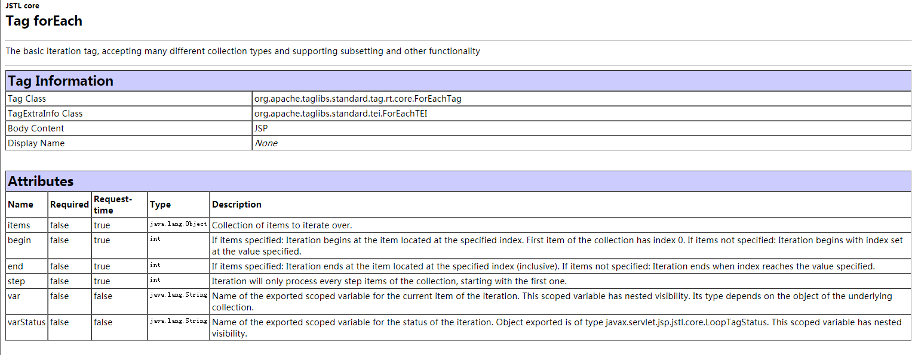
varStatus:指定当前迭代状态信息的对象保存到page域中的名称。
begin:指定从集合中第几个元素开始进行迭代。
forEACH标签迭代数组
<%
String[] fruits = {"apple","orange","grape","banana"};
request.setAttribute("fruits", fruits);
%>
水果为：<br>
<c:forEach items="${fruits }" var="element1">
${element1}<br>
</c:forEach>
forEACH标签迭代Map集合
在迭代Map类型的集合时，迭代出的每个元素的类型都为Map.Entry，Entry代表Map集合中的每一个条目项，其中，getKey()方法可获得条目项的关键字，getValue()方法可获得条目项的值。
<%
Map<String,String> map = new HashMap<>();
map.put("1", "china");
map.put("2", "suining");
map.put("3", "xuzhou");
map.put("4", "jiangsu");
request.setAttribute("map",map);
%>
<c:forEach items="${map}" var="ele">
<c:out value="${ele.key }"></c:out>
<c:out value="${ele.value }"></c:out><br>
</c:forEach>
forEACH标签迭代集合中元素的状态信息
varStatus属性可以获取以下信息：
(1)count:表示元素在集合中的序号，从1开始计数
（2）index:表示当前元素在集合中的索引，从0开始计数
（3）first:表示当前是否为集合中的第一个元素
（4）last:表示当前集合是否为集合中的最后一个元素。
<%
String[] arr={"交通大学","复旦大学","上海大学","东华大学","上海外国语大学","上海理工大学"};
request.setAttribute("school",arr);
%>
<!-- 构造一个表格 -->
<table border="1px" bgcolor="blue">
<!-- 构造表头 -->
<tr>
<th>学校</th>
<th>序号</th>
</tr>
<!-- 迭代获取表格中的元素 -->
<c:forEach items="${school}" var="name" varStatus="status">
<tr>
<td>${name}</td>
<td>${status.index}</td>
<c:if test="${status.count%2==0}">
</c:if>
</tr>
</c:forEach>
</table>
<c:forTokens>标签与<c:forEach>标签类似，都可以完成迭代功能，只不过<c:forTokens>标签用于迭代字符串中用指定分隔符分隔的子字符串，并且能重复执行标签体。 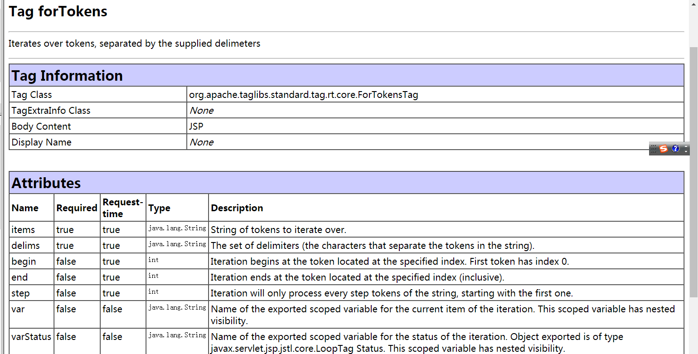
step:用于 指定迭代的步长，即迭代因子的增量。
<c:forTokens items="Spring,autum,winter|Summer|Autum" delims=",|" var="season" > ${season }
</c:forTokens>
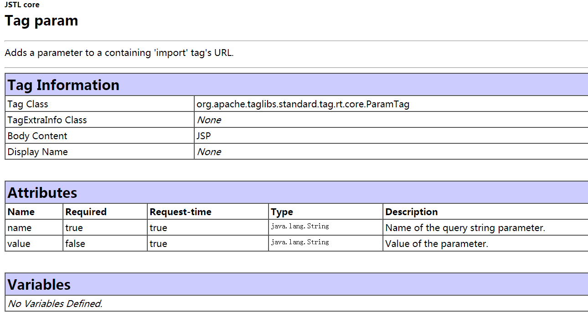
在开发一个Web应用程序时，通常会在JSP页面中完成URL的重写以及重定向等特殊功能，为了完成这些功能，在Core标签库中，也提供了相应功能的标签，这些标签包括<c:param>、<c:redirect>、<c:url>。其中，<c:param>用于获取URL地址中的附加参数，<c:url>标签用于按特定的规则重新构造URL,<c:redirect>标签负责重定向。
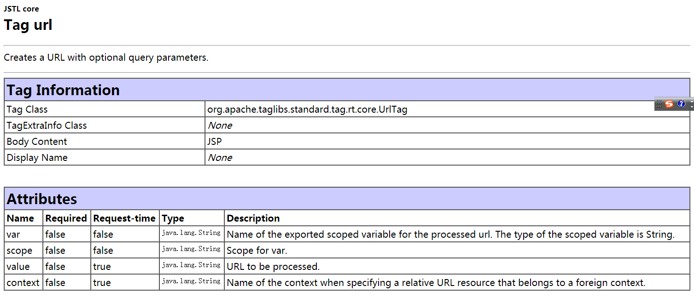
在访问到一个JS页面时，通常会在URL中传递一些参数信息，为了方便完成这种功能，Core标签库中提供了一个<c:url>标签，该标签可以在JSP页面中构造一个新的URL地址，实现URL地址的重写，
scope:用于指定将构造好的URL保存到域对象中。
使用绝对路径构造URL:<br>
<c:url var="myUrl" value="register.jsp" >
<!-- 使用c:param添加参数 -->
<c:param name="userName" value="张三"></c:param>
<c:param name="password" value="123"></c:param>
</c:url>
<a href="${myUrl }">register.jsp</a><br>
使用相对路径构造URL:<br>
<c:url var="myUrl1" value="register.jsp?userName=Tom&password=123"></c:url>
<a href="${myUrl1 }">register.jsp</a>
相当于 response.sendRedirect
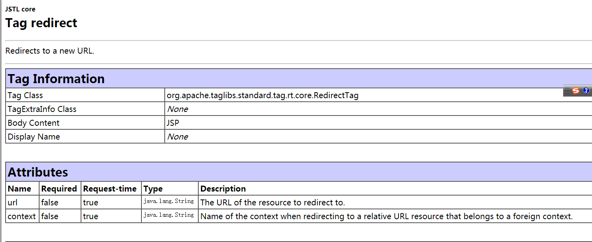
* URL：用于指定转发或重定向到目标资源的URL地址
* context:用于指定重定向到同一个服务器中的其他Web应用的名称。
<c:url var="myurl" value="register.jsp">
<c:param name="userName" value="zhoujian"></c:param>
<c:param name="password" value="123"></c:param>
</c:url>
<c:redirect url="${myurl }"></c:redirect>
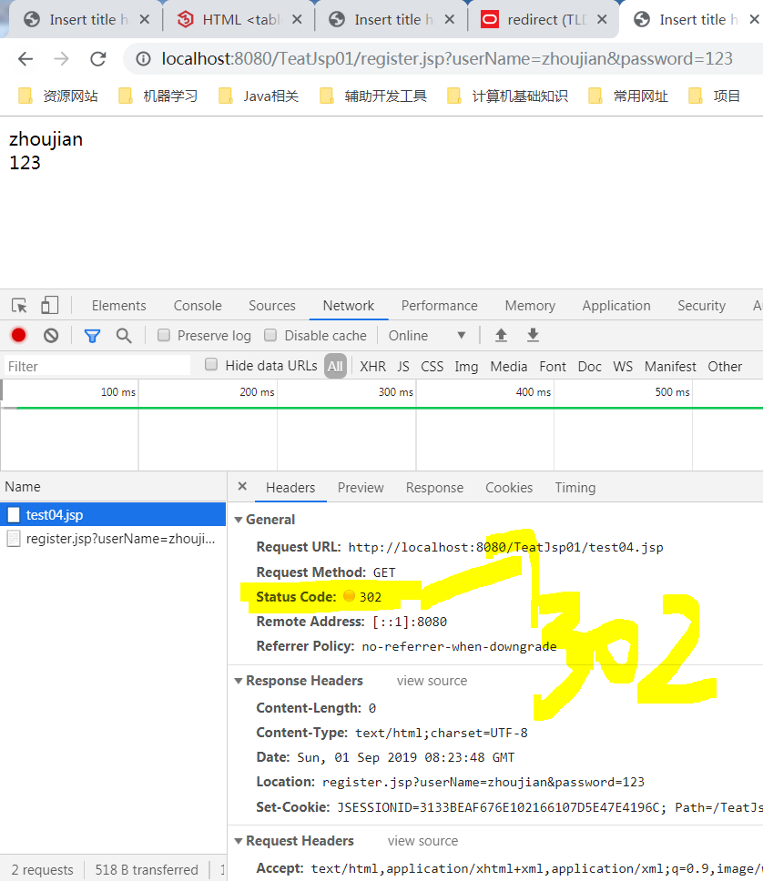
为了简化JSP页面中对字符串的操作，JSTL的Functions标签库中提供了一套自定义EL函数，这套自定义EL函数包括JSP页面制作者经常要用到的字符串操作。